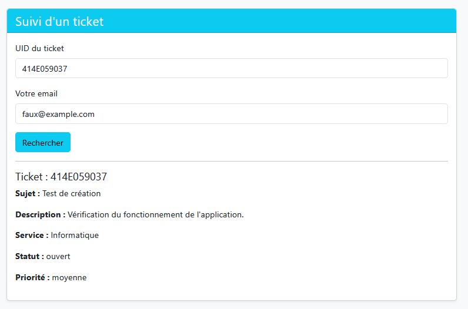
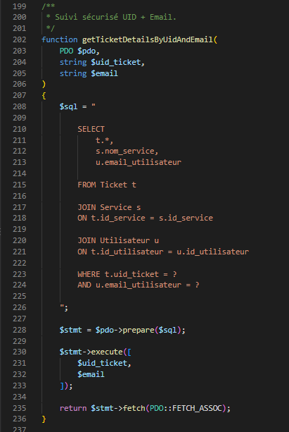
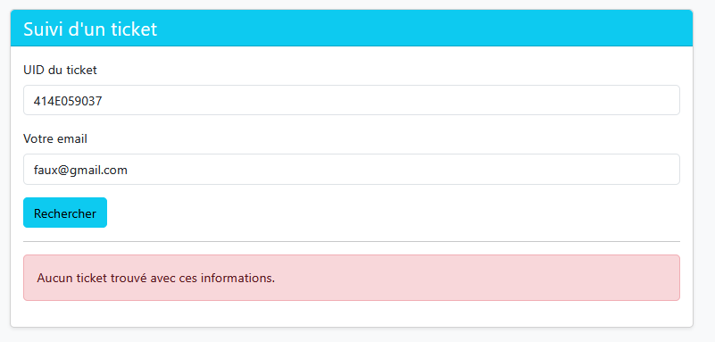
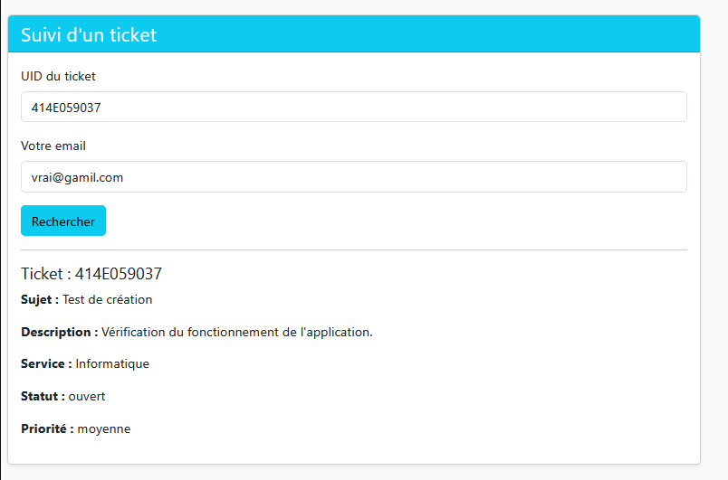

SAÉ 2.03
Gestion de tickets d'un parc informatique
Gestion de tickets d'un parc informatique
Dans le cadre de cette SAÉ, j'ai travaillé sur une application web de gestion de tickets pour un parc informatique. L'application permet aux utilisateurs de signaler un problème et de retrouver leur ticket grâce à un identifiant unique appelé UID.
Le projet utilise PHP pour traiter les formulaires et MySQL pour enregistrer les informations. J'ai notamment testé la création et le suivi des tickets afin de vérifier le bon fonctionnement de l'application.
Pendant les tests, j'ai étudié un problème lié à la vérification de l'adresse e-mail lors du suivi d'un ticket. Cette situation m'a permis de réfléchir à la protection des informations des utilisateurs.
Cette SAÉ m'a permis de travailler sur le développement d'une application web, la gestion des données et la vérification du fonctionnement d'un service.
Les apprentissages critiques officiels devront être repris selon les indications du sujet de la SAÉ.
J'ai utilisé XAMPP pour exécuter l'application en local avec PHP et MySQL. J'ai testé la création d'un ticket, puis sa recherche à partir de son UID et d'une adresse e-mail.
Pour réaliser les tests, j'ai utilisé un ticket dont l'UID était : 414E059037.
J'ai ensuite comparé le résultat obtenu avec une adresse e-mail correcte et avec une adresse e-mail incorrecte.

Ticket de test utilisé pour vérifier la fonction de suivi.
Lors des tests de suivi, j'ai constaté qu'un ticket pouvait s'afficher alors que l'adresse e-mail saisie était incorrecte. Ce comportement représentait un risque pour la confidentialité des informations enregistrées dans l'application.
Le formulaire de suivi demandait l'UID du ticket et l'adresse e-mail de l'utilisateur. Cependant, lors du test initial, le ticket apparaissait même avec une adresse e-mail incorrecte.

Test initial : le ticket s'affiche malgré la saisie d'une adresse e-mail incorrecte.
Ce résultat indiquait que la vérification des informations fournies pour retrouver le ticket ne fonctionnait pas comme attendu. Une personne connaissant l'UID risquait ainsi d'accéder à des informations qui ne lui étaient pas destinées.
Pour assurer un suivi sécurisé, l'application doit vérifier simultanément l'UID du ticket et l'adresse e-mail associée à son propriétaire. Si les deux informations ne correspondent pas, les détails du ticket ne doivent pas être affichés.
La condition SQL attendue pour effectuer cette vérification est :
Cette condition permet de rechercher un ticket à partir des deux informations. Les valeurs doivent être transmises à l'aide d'une requête préparée.

Code PHP utilisé pour vérifier l'UID du ticket et l'adresse e-mail.
J'ai effectué un nouveau test avec le même UID, mais en utilisant une adresse e-mail incorrecte. L'application a affiché le message « Aucun ticket trouvé avec ces informations. » sans présenter les détails du ticket.

Test avec une adresse e-mail incorrecte : le ticket n'est plus affiché.
J'ai également testé le suivi avec l'UID et l'adresse e-mail correcte. Les informations du ticket se sont affichées normalement. Ce test permet de vérifier que le suivi reste fonctionnel lorsque les informations saisies sont correctes.

Test valide : le ticket est retrouvé avec l'UID et la bonne adresse e-mail.
Les tests montrent que le suivi doit dépendre de la correspondance entre l'UID et l'adresse e-mail. Avec les bonnes informations, le ticket s'affiche. Avec une adresse incorrecte, l'application ne doit pas retourner les détails du ticket.
Cette situation m'a permis de comprendre qu'un identifiant unique ne suffit pas à garantir la confidentialité d'un ticket. Il est important de vérifier les informations associées à son propriétaire avant d'afficher les données.
J'ai également compris l'intérêt des tests négatifs : ils permettent de vérifier que l'application refuse les informations incorrectes, en complément des tests réalisés avec des informations valides.
Ce travail m'a permis de tester une application web de gestion de tickets et d'étudier un problème lié à la confidentialité des données des utilisateurs.
La comparaison entre un suivi valide et un suivi avec une adresse e-mail incorrecte montre l'importance de vérifier les informations du demandeur avant d'afficher un ticket.
J'ai progressé dans la compréhension du code PHP, des requêtes SQL et des tests fonctionnels. Cette expérience m'a aussi appris à présenter un problème à partir d'observations, d'analyses et de résultats vérifiables.